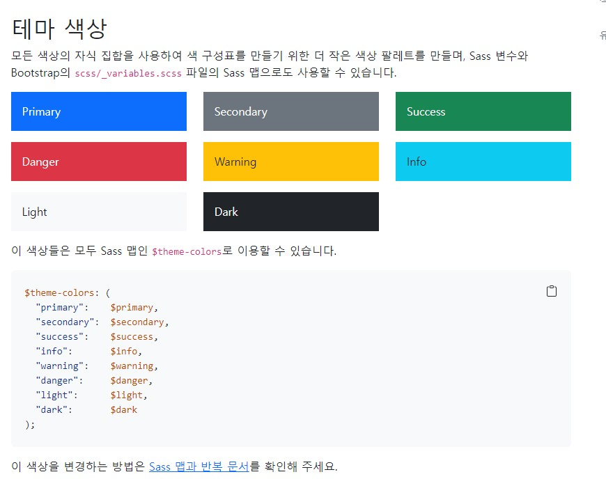

부트스트랩에서는 기본 글자크기가 14px이고, 행높이는 1.428이 기본값이다.
위 내용은 문단태그 (p)요소에 자동으로 적용되며, 하단여백은 16px이 기본값이다.
pc화면 사이즈
blockquote태그(다른사람의 말을 대신하여 전하는 글) font-size:16px
code태그(html태그안에서 태그 이름을 표시하기 위한 태그로서 색상이 붉은색으로 변경됨) ex)div font-size:14px
텍스트를 중요도에 따라 문자의 색상을 다르게 표시할 수 있다.
참고사이트_bootstrap 사이트 바로가기 상활별로 문자의 배경색을 적용하려면 class="bg-primary",class="bg-success" 등으로 기재해준다.
class=lead :단락을 눈에 띄게 하기 (글자크기:20px)
class=small :상위문자 크기의 85%로 문자크기를 작게 설정함
class=text-start : 문단 왼쪽정렬
class=text-end :문단 오른쪽정렬
class=text-center :문단 가운데정렬
class=text-justify :문단 양쪽배분정렬
class=text-nowrap :문단끝에서 글자가 다음줄로 넘어가지 않기
class=text-uppercase :문자를 대문자로 출력
class=text-uppercase :문자를 소문자로 출력
class=capitalize :영문자의 첫글자만 대문자로 출력